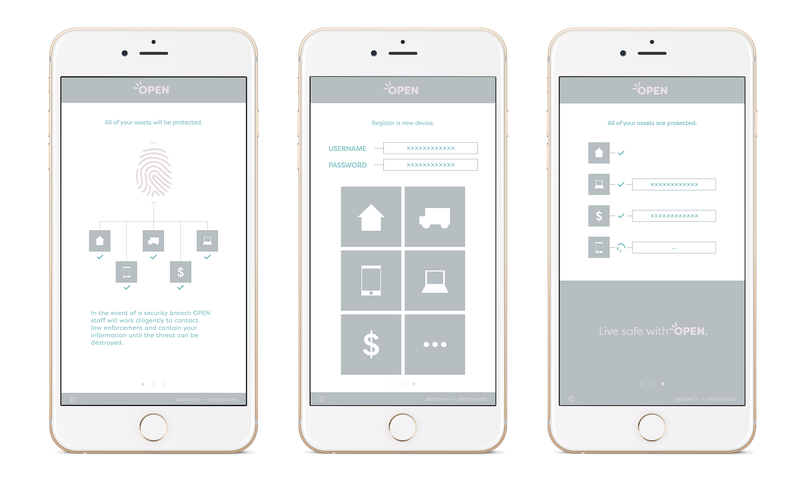
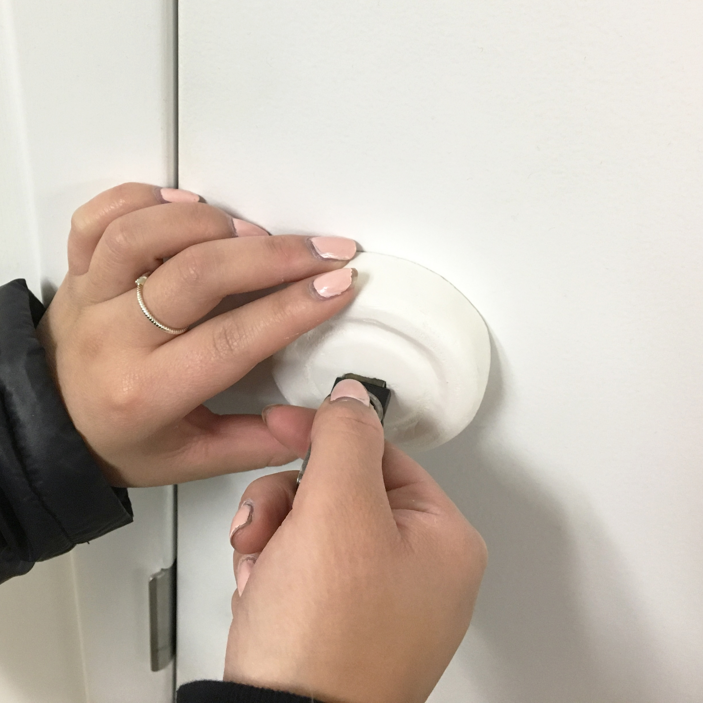
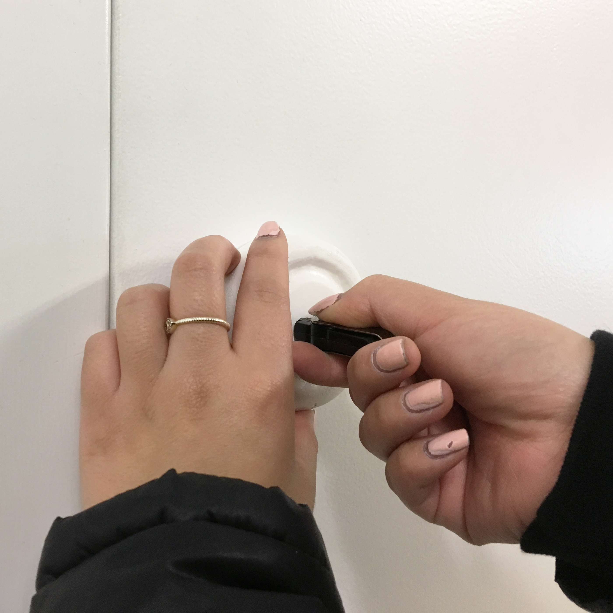
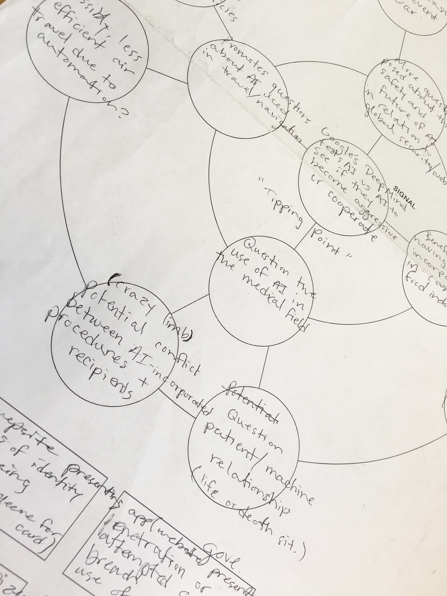
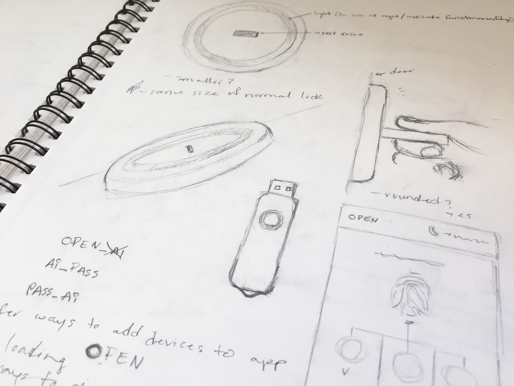

OVERVIEW
OPEN is a multifacited security manager designed for those disinterested in handling a lot of cluttered buttons and settings. OPEN is a neccesary tool to ensure the safety of your assets and information by storing all sensitive information in one place and continually changing your passwords.

HOW
A biometric fingerprint reader in the device allows one to access the tools used in their daily lives with ease while knowing their privacy is secured. The user registers their device through the use of the OPEN applicaion on their mobile device where all assets can be monitored.


PROCESS
OPEN was born out of the need for more security when it comes to our digital information and identities. We find ourselves living in a time where technology has the potential to grow and learn. With this new age comes new and more unknown risks that should be contended with early on.
The use of a physical "key" allows one to protect their information outside the digital realm while staying connected when needed and the minimal design allows for integration into all aspects of daily life.

